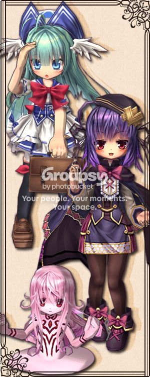
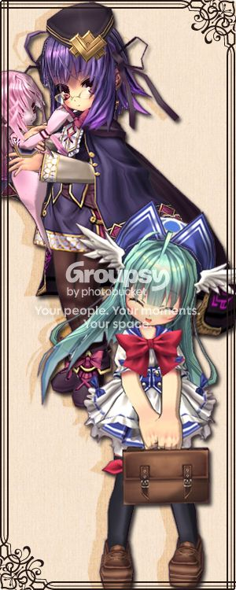
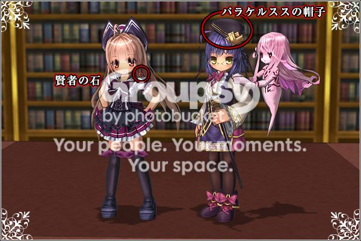
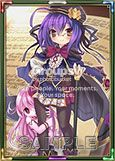

ระยะเวลาอีเวนท์ : 25 กรกฎาคม 2013 ~ 22 สิงหาคม 2013

เงื่อนไขการเข้าร่วมอีเวนท์ : เข้าร่วมได้ทุกตัวละคร
*ตัวละครจะต้องมีความแข็งแกร่งและชื่อเสียงบ้างจึงจะเข้าร่วมได้
ของรางวัลหลังเคลียร์อีเวนท์

เมื่อจบอีเวนท์ จะได้รับ 「パラケルススの帽子」(มีทั้งหมด 3 สีให้เลือก)
พร้อมกับไอริสการ์ด「パラケルスス・ロア」และการ์ด「パラケルススとローレライ」


เมื่อให้ 「ＥＸイベントチケット」 3ใบแก่เด็กคนนี้ที่อยู่ใน 「なんでもクエストカウンター」
จะได้รับ 「賢者の石」 (เมื่อสวมใส่ สามารถใช้สกิล 賢者の石 ได้)
สกิล 賢者の石
ฟื้นฟู Hp Mp Sp ของเป้าหมายเป็นร้อยละแบบตายตัว(ไม่ต้องใช้ค่าสเตตัสในการคำนวน)
เมื่อใช้สกิลนี้ความทนทานของ " ศิลานักปราชญ์ " จะลดลง 1 (ศิลานักปราชญ์ มีความทนทาน 6)

เริ่มอีเวนท์ที่คนนี้

หลังจบอีเวนท์จะมีให้ใส่「秘密の言葉」(Secret word) กับ พาราเซลซัส ลอร์ ได้
โดย 「秘密の言葉」 นั้นมี 2 คำ
ซึ่งสามารถหาได้จาก Mail Magazine และ ถูกซ่อนอยู่ในหน้าเพจหลักของอีเวนท์นี้
(หน้าเพจหลักให้เข้าที่ลิงค์ ดูรายละเอียดเพิ่มเติม)
ดูรายละเอียดเพิ่มเติมได้ที่ http://econline.gungho.jp/special/lore/
กลับไปหน้าสารบัญ